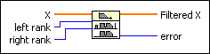
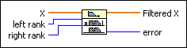
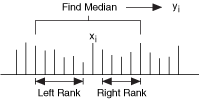

Median Filter VI
Owning Palette: Filters VIs
Requires: Full Development System
Applies a median filter of rank to the input sequence X.

 Add to the block diagram Add to the block diagram |
 Find on the palette Find on the palette |
Owning Palette: Filters VIs
Requires: Full Development System
Applies a median filter of rank to the input sequence X.

| Add to the block diagram |
Find on the palette |
 |
X is the input signal to filter. The number of elements, n, in X must be greater than right rank. If the number of elements in X is less than or equal to right rank, the VI sets Filtered X to an empty array and returns an error. |
 |
left rank is the number of elements used to compute the median filter to the left side. left rank must be greater than or equal to 0. The default is 2. |
|
right rank is the number of elements used to compute the median filter to the right side. If right rank is less than 0, the VI assumes right rank is equal to left rank. right rank must be less than the number of elements in X. The default is -1. |
 |
Filtered X is the output array of filtered samples. The size of this array is the same as the input array X. |
 |
error returns any error or warning from the VI. You can wire error to the Error Cluster From Error Code VI to convert the error code or warning into an error cluster. |
The Median Filter VI obtains the elements of Filtered X using the following equation.
yi = Median(Ji) for i = 0, 1, 2, …, n – 1,
where Y represents the output sequence Filtered X, n is the number of elements in the input sequence X, Ji is a subset of the input sequence X centered about the ith element of X, and the indexed elements outside the range of X equal zero. The following equation describes Ji.
Ji = {xi – rl, xi – rl + 1, K, xi – 1, xi, xi + 1, K, xi + rr – 1, xi + rr},
where rl is the filter left rank, and rr is the filter right rank.
The following illustration shows the computation of yi.

Refer to the Median Filtering VI in the labview\examples\Signal Processing\Filters directory for an example of using the Median Filter VI.
 Open example Find related examples
Open example Find related examples